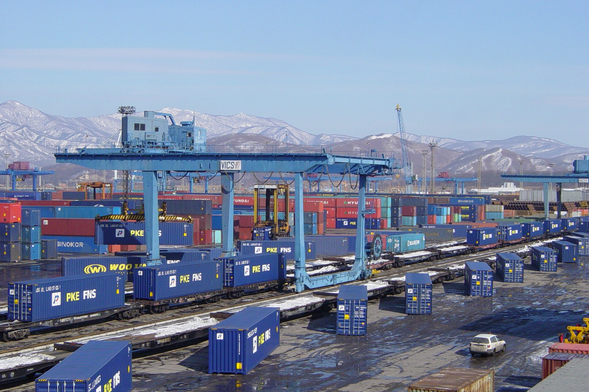
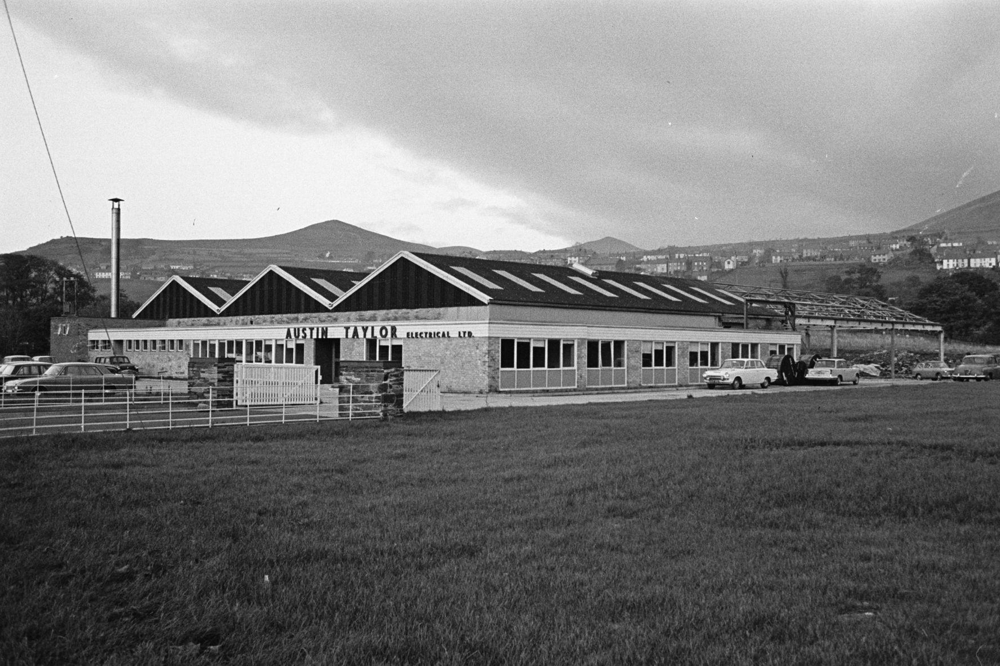
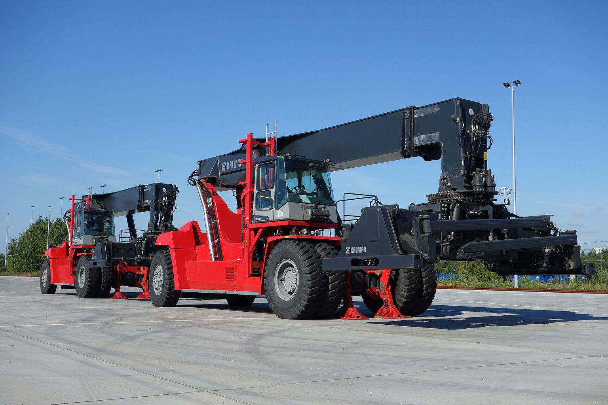

A validation phase is required before committing capital to UAE lastest update about the Iran-US war. The Iran-US conflict has entered a new, more dangerous phase, with direct attacks on UAE territory and a subsequent trade embargo on Iran. For UAE-based businesses and investors, the immediate question is how to protect margins and supply chains, but the strategic question is where to deploy capital as the country's economic model shifts.
Energy Markets: Oil Volatility and Supply Disruption Are the Primary Shock, but UAE's Pipeline Provides a Buffer
The conflict has disrupted oil flows through the Strait of Hormuz, but the UAE's Habshan-to-Fujairah pipeline allows it to bypass the chokepoint, partially offsetting the impact. Oil price volatility remains high, with Brent futures showing wide swings, and OPEC+ decisions will be critical in determining the extent of price pressure.

The Strait of Hormuz is a critical chokepoint, carrying roughly 25% of global crude oil and petroleum product trade and 19% of LNG in 2025 (The Strait of Hormuz: Security Developments and Impacts on Oil ..., The Strait of Hormuz: Security Developments and Impacts on Oil ...). In 2025, an average of 20 million barrels per day (mb/d) transited the strait . The conflict has effectively closed the strait since March 2026, with only a fraction of normal flows resuming during the US-Iran MoU period (Source 10, Source 6).
The UAE has a strategic advantage: the Habshan-to-Fujairah pipeline can export up to 1.8 million barrels per day, allowing it to bypass the strait (Source 3). This has enabled the UAE to capitalize on higher oil prices, similar to Saudi Arabia's east-west pipeline. However, the overall economic impact is still negative, as the World Bank downgraded GCC growth forecasts from 4.4% to 1.3% for 2026 (Source 3).
Oil price volatility has been extreme. The Brent backwardation spread ballooned to nearly $26 per barrel in early April 2026, then collapsed to $1.20 by mid-July, and has since widened to $8.49, more than double its 2025 average of $3.58 . This volatility reflects market uncertainty about the conflict's trajectory and the effectiveness of OPEC+ responses.
OPEC+ decisions are a key swing factor. In May 2025, OPEC+ announced plans to taper voluntary cuts, but only 0.14 mb/d was restored, partly offset by extra cuts from Iraq and Kazakhstan . The UAE's exit from OPEC+ in 2025 (as reported by Yahoo Finance) adds further uncertainty, potentially leading to a price war similar to 2014-2016 . Counter-evidence: Some analysts argue that oil prices have remained below war-time expectations due to ample spare capacity and demand concerns (Source 23). The market has not priced in a full closure of the strait, suggesting that a prolonged disruption could still cause a significant spike.
- The Strait of Hormuz: Security Developments and Impacts on Oil ... — In 2025, roughly 25% of the world's maritime trade in crude oil and petroleum products, as well as roughly 19% of liquefied natural gas, passed ..
- Strait of Hormuz - About - IEA — The Strait of Hormuz, through which an average of 20 million barrels per day (mb/d) of crude oil and oil products were shipped in 2025, is one of the world's ..
- The UAE has utilized a pipeline from Habshan to Fujairah to export up to 1.8 million barrels of oil each day from the Gulf of Oman (Source 3).
- Why Has the Price of Oil Remained Below War-Time Expectations? — It ballooned to nearly $26 per barrel in early April, then all but vanished to $1.20 by mid-July as the market talked itself into an imminent settlement, and has since widened again to $8.49, more than double its 2025 average of $3.58 (Figure 3)
The executive case should start with the few numbers the public record can support
Each headline metric is traceable to a retained public source sentence.
Evidence: Economic performance and outlook - PwC, UAE trade embargo could shut Iran's key economic escape route, UAE trade embargo could shut Iran's key economic escape route. Sources: pwc.com; aljazeera.com.
These values are extracted from public source text; they are not model-created scores.
Sources
- Source 6 supplementary web $30B - Only 0.14m b/d was restored, partly offset by extra cuts announced in March to compensate for past overproduction, primarily from Iraq and Kazakhstan, with minor adjustments for each of the GCC states – OPEC 20 March. Economic performance and outlook - PwC
- Source 14 supplementary web $6.2B - According to the most recent trade data from the Observatory of Economic Complexity (OEC), official goods trade between the UAE and Iran amounted to $6.2bn in 2023. The UAE’s exports to Iran were valued at. UAE trade embargo could shut Iran's key economic escape route
- Source 15 supplementary web $5.8B - According to the most recent trade data from the Observatory of Economic Complexity (OEC), official goods trade between the UAE and Iran amounted to $6.2bn in 2023. The UAE’s exports to Iran were valued at. UAE trade embargo could shut Iran's key economic escape route
Logistics and Trade: Shipping Insurance Costs Have Spiked 10-Fold, and Rerouting Is Becoming the New Normal
War-risk insurance premiums for vessels transiting the Gulf have surged, with quotes for high-risk vessels reaching 10% of hull value. This directly raises trade costs for UAE-based shippers and importers, and the risk of further escalation remains high.

The conflict has made the Strait of Hormuz a high-risk zone. War-risk premiums for seven-day cover have increased 10-fold compared to pre-conflict levels, and quotes for high-risk vessels are now at 7.5-10% of hull value (Source 13). This is a significant cost increase for shipping companies operating in the region. The insurance market remains functional, but with modified terms. The German Insurance Association (GDV) confirms that coverage is still available, but insurers are adjusting pricing and conditions (Source 11).
Some P&I clubs have withdrawn war-risk cover for the Persian Gulf, forcing charterers to seek alternative arrangements (Source 14). Shipping volumes through the strait have plummeted. During the US-Iran MoU period, oil flows averaged 6.1 million bpd, only 40% of the pre-war level of 15 million bpd (Source 6). This has led to stranded vessels and rerouting, increasing transit times and costs. The UAE's trade embargo on Iran adds another layer of disruption.
Official goods trade between the UAE and Iran was $6.2 billion in 2023, with UAE exports of $5.8 billion (UAE trade embargo could shut Iran's key economic escape route, UAE trade embargo could shut Iran's key economic escape route). The embargo will cut off this trade, affecting businesses that relied on the Iranian market. Counter-evidence: Some shipping companies may benefit from rerouting, as UAE ports like Fujairah and Jebel Ali could see increased transshipment activity. However, the overall impact on trade margins is negative due to higher insurance and security costs.
The rerouting of vessels around the Arabian Peninsula or through the Red Sea increases transit times and fuel costs, further squeezing margins. For UAE-based logistics providers, this could be an opportunity to offer alternative routing solutions, but it requires investment in new capabilities and partnerships. The insurance market's response will be critical; if premiums remain high, some smaller players may be forced out of the market, consolidating the industry.
- Premiums for seven-day war risk cover in the Middle East Gulf region are now up 10-fold on where they were before the US and Israeli attack on Iran (Source 13).
- Quotes for high-risk vessels could already be at 10% of hull value (Source 13).
- During the MoU period, oil flows averaged 6.1 million bpd, only 40% of the roughly 15 million barrels that transited the Strait of Hormuz each day in 2025 (Source 6).
- UAE trade embargo could shut Iran's key economic escape route — According to the most recent trade data from the Observatory of Economic Complexity (OEC), official goods trade between the UAE and Iran amounted to $6.2bn in 2023. The UAE’s exports to Iran were valued at approximately $5.8bn, with imports of about $450m worth of goods in return
Funding signals show when public-private capital commitments become visible
Dated dollar figures show where commitment has moved from ambition into named programs or follow-on capital.
Evidence: UAE trade embargo could shut Iran's key economic escape route, UAE trade embargo could shut Iran's key economic escape route, Financial services chart of the week: war-risk premiums surge, Financial services chart of the week: war-risk premiums.
Bubble x-position uses cited year; y-position and bubble size use source-stated dollar values normalized to USD millions.
Sources
- Source 15 supplementary web $5.8B - According to the most recent trade data from the Observatory of Economic Complexity (OEC), official goods trade between the UAE and Iran amounted to $6.2bn in 2023. The UAE’s exports to Iran were valued at. UAE trade embargo could shut Iran's key economic escape route
- Source 14 supplementary web $6.2B - According to the most recent trade data from the Observatory of Economic Complexity (OEC), official goods trade between the UAE and Iran amounted to $6.2bn in 2023. The UAE’s exports to Iran were valued at. UAE trade embargo could shut Iran's key economic escape route
- Source 36 supplementary web $51.5B - The agency has a statutory liability cap of US$205bn through 2031, of which it had already used up US$51.5bn by end-2025. This means any expansion of support would require congressional approval Financial services chart of the week: war-risk premiums surge
- Source 35 supplementary web $205.0B - The agency has a statutory liability cap of US$205bn through 2031, of which it had already used up US$51.5bn by end-2025. This means any expansion of support would require congressional approval Financial services chart of the week: war-risk premiums surge
Financial Sector: Credit Risk Is Rising, but UAE Banks Are Resilient Due to Strong Capital Buffers
UAE banks face increased credit risk from exposure to sectors vulnerable to the conflict, such as trade, real estate, and tourism. However, strong capital buffers and government support are likely to mitigate the impact, though lending standards may tighten.

The conflict is expected to slow economic growth, which will pressure asset quality. The World Bank downgraded GCC growth to 1.3% for 2026 (Source 3). Goldman Sachs forecasts that the UAE could see a decline in real GDP of 8-10% in 2026 (The Economic Impact of the Iran Conflict on the Gulf - AGSI, The Economic Impact of the Iran Conflict on the Gulf - AGSI). This will increase non-performing loans (NPLs) in sectors directly hit by the conflict. UAE banks have significant exposure to real estate, construction, and trade, which are vulnerable to disruption.
However, the banking sector has strong capital buffers and has weathered past crises. The UAE Central Bank has tools to support liquidity if needed. The conflict has also affected the UAE's financial ties with Iran. The trade embargo will cut off financial transactions with Iran, which could impact banks that had exposure to Iranian trade finance. However, this exposure is likely small relative to total assets.
Currency risk: The UAE dirham is pegged to the US dollar, so it is unlikely to depreciate. However, safe-haven flows could strengthen the dollar, making imports more expensive in local currency terms. This could fuel inflation, which the central bank may need to manage. Counter-evidence: Some banks may benefit from higher interest rates and increased demand for trade finance as companies seek to hedge risks. The overall impact on the banking sector is likely to be manageable, but credit conditions will tighten.
The tightening of credit conditions could particularly affect small and medium-sized enterprises (SMEs) that rely on bank financing. Banks may become more selective in lending, focusing on established clients with strong collateral. This could slow the recovery of the non-oil sector. However, government-backed stimulus programs may provide alternative funding channels for SMEs, mitigating the impact.
- The World Bank has downgraded its 2026 GDP growth forecast for the region from 4.4% to just 1.3% (Source 3).
- The Economic Impact of the Iran Conflict on the Gulf - AGSI — Forecasts by Goldman Sachs suggest that Oman and Saudi Arabia will be the least impacted by the conflict (declines in real GDP in 2026 of less than 2% and around 5%, respectively), while the other four countries could potentially see declines of 8% to 10%
- The UAE's suspension of commercial ties with Iran creates a 'degraded security environment' that increases pressures on the Middle East's second-largest economy (Source 2).
Non-Oil Sectors: Tourism and Real Estate Face Short-Term Headwinds, but Long-Term Resilience Is Likely
The UAE's diversification efforts and government stimulus will support the rebound.

The UAE's tourism sector has been a key growth driver, with 45 million international arrivals in 2024, contributing $70.1 billion (13% of GDP) (Source 17). Hotel revenues reached Dh49.2 billion in 2025, up 9.7% year-on-year . However, the conflict is likely to deter tourists in the short term. The UAE government is likely to implement stimulus measures to support these sectors.
Real estate transactions in Dubai have been at record levels, but the conflict could cool investor sentiment. However, the UAE's status as a safe haven in the region may attract capital from other Gulf countries and beyond. The conflict is also accelerating the UAE's diversification into other sectors, such as technology and logistics. The government's focus on innovation (ranked 1st in the Global Innovation Index 2025) will help create new growth areas.
Counter-evidence: The conflict could be prolonged, leading to a longer downturn. The UAE's reliance on air travel makes it vulnerable to regional instability, and airlines like Emirates and Etihad are already under financial pressure (Source 3). This suggests that the current downturn may be temporary, but the duration of the conflict will be a key factor. The government's ability to maintain its diversification agenda will also influence investor confidence.
- UAE's travel and tourism sector welcomed 45.0 million international arrivals in 2024, with the industry contributing $70.1 billion — 13.0% of national GDP and 899,000 jobs (Source 17).
- UAE Tourism Industry Achieves Record Growth in 2025 as Hotel ... — The UAE hotel industry experienced exceptional growth across all major performance indicators in 2025. Total hotel revenues increased by 9.7% year-on-year, reaching nearly Dh49.2 billion, highlighting the resilience and expansion of the country’s hospitality market
- The Iran war has also placed Gulf airlines such as Emirates, Etihad and Qatar Airways under increasing financial pressure (Source 3).
Commercial timelines still depend on confidence bands, not delivered electricity
Surveyed or reported percentages help separate confidence in target dates from proof of commercial deployment.
Evidence: Dubai Welcomes 19.59 Million Visitors in Third Record Year, UAE Tourism Industry Achieves Record Growth in 2025 as Hotel .... Sources: dubaidet.gov.ae; ilandproperties.com.
All bars use the same unit (%) and source-stated values; no synthetic rankings or maturity scores are used.
Sources
- Source 3 supplementary web 21.3% - According to data published in the Financial Times Ltd's 'fDi Markets' tracking database, in the first half of 2025, hotels and tourism (21.3%) was one of the .. Dubai Welcomes 19.59 Million Visitors in Third Record Year
- Source 19 supplementary web 9.7% - The UAE hotel industry experienced exceptional growth across all major performance indicators in 2025. Total hotel revenues increased by 9.7% year-on-year, reaching nearly Dh49.2 billion, highlighting the resilience. UAE Tourism Industry Achieves Record Growth in 2025 as Hotel ...
Strategic Implications: The Conflict May Accelerate UAE's Diversification into Renewables and Alternative Trade Routes
The conflict is a catalyst for the UAE's long-term strategy to reduce dependence on oil and diversify its economy. Investment in renewable energy and logistics infrastructure is likely to accelerate, creating new opportunities for businesses and investors.

The UAE has been investing heavily in renewable energy, with projects like Masdar and the Barakah nuclear plant. The conflict underscores the need for energy security and diversification, likely leading to increased investment in solar and wind projects. The disruption to the Strait of Hormuz highlights the importance of alternative trade routes. The UAE is investing in logistics hubs like Dubai's Jebel Ali port and the Etihad Rail network, which can serve as alternatives to sea routes.
The UAE's foreign policy is also evolving. The trade embargo on Iran signals a tougher stance, but the UAE is also strengthening ties with other partners, including China and India, to diversify its economic relationships. The conflict may also accelerate the UAE's shift towards a knowledge-based economy, with investments in technology, AI, and financial services.
The government's focus on innovation (ranked 1st in the Global Innovation Index 2025) will support this. Counter-evidence: The pace of diversification may be slowed by the immediate economic impact of the conflict. Government spending may be diverted to security and stimulus, reducing funds for long-term projects. However, the UAE has a strong fiscal position and can borrow if needed.
The conflict reinforces the UAE's existing diversification strategy, as evidenced by the growth in renewable energy investment and the development of logistics infrastructure. While the immediate economic impact is negative, the strategic direction is clear. Businesses that align with these trends are likely to benefit in the long term, as the UAE seeks to reduce its vulnerability to oil price shocks and regional instability.
- MoEc Open Data | Ministry of Economy & Tourism - UAE — Rank of the UAE in the Global Innovation Index 2025. 1. Rank of the ..
- The UAE's OPEC Exit Changes the Oil Trade - Yahoo Finance — The UAE's exit from OPEC+ removes production coordination from the cartel and increases the risk of a price war similar to 2014-2016, when Saudi Arabia flooded the market and crushed oil prices to under $30, but today's lean shale operators are better positioned to survive volatility than they were a decade ago
- The UAE has utilized a pipeline from Habshan to Fujairah to export up to 1.8 million barrels of oil each day from the Gulf of Oman (Source 3).
Where to Start
The near-term objective is to turn the evidence into a few choices that preserve learning before committing scarce capital or operating capacity.
-
0-3 monthsRenegotiate shipping contracts to include war-risk premium clauses and explore alternative routes. Progress should be visible through reduce logistics costs by 10-15% or maintain margins despite higher insurance. Insurance premiums have spiked 10-fold, and rerouting may be necessary. Contract flexibility is key.
-
Decision gateStress-test credit portfolios for exposure to trade, real estate, and tourism sectors. Progress should be visible through identify potential NPLs and set aside provisions accordingly. Economic slowdown will increase credit risk; proactive management is essential. Implementation of stress-test credit portfolios for exposure to trade, real estate, and tourism sectors. establishes direct operational control, mitigating execution risk and validating key unit economics against target performance benchmarks.
-
Decision gateInvest in renewable energy and logistics infrastructure projects aligned with UAE's diversification strategy. Progress should be visible through achieve targeted returns and diversify revenue streams. The conflict highlights the strategic importance of energy security and alternative trade routes, and the UAE's existing investments in renewables and logistics (e.g., Masdar, Jebel Ali port) suggest these sectors will remain priorities, creating opportunities for aligned investments.
-
Decision gateDiversify export markets away from Iran to mitigate the impact of the trade embargo. Progress should be visible through validate initial operational KPIs and adoption benchmarks before scaling capital commitment. The embargo cuts off $6.2 billion in trade; finding new markets is critical.
-
Decision gateMonitor government fiscal stimulus and bond issuance for investment opportunities in sovereign debt. Progress should be visible through capture yield while managing sovereign risk. The UAE is likely to increase spending and issue bonds to support the economy, offering investment opportunities.